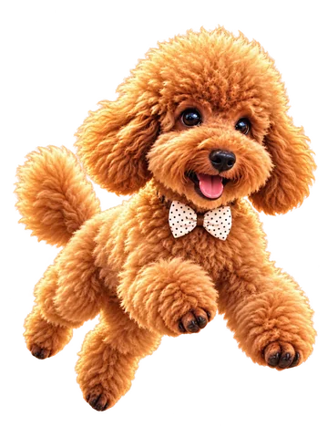

KYGO WORLD · TIMP DE JOACĂ
Parcul lui Kygo
Un nas curios. Lăbuțe rapide. Patru aventuri în aer liber.

Sapă după os
Explorează parcul
Săgeți / WASD: deplasare · Spațiu / Enter: acțiune · P: pauză
KYGO WORLD · TIMP DE JOACĂ
Un nas curios. Lăbuțe rapide. Patru aventuri în aer liber.

Săgeți / WASD: deplasare · Spațiu / Enter: acțiune · P: pauză